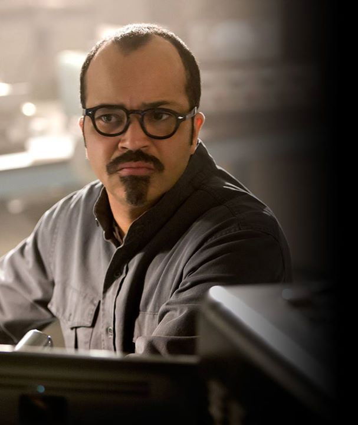
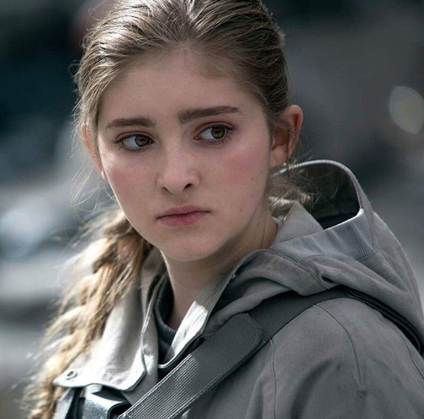
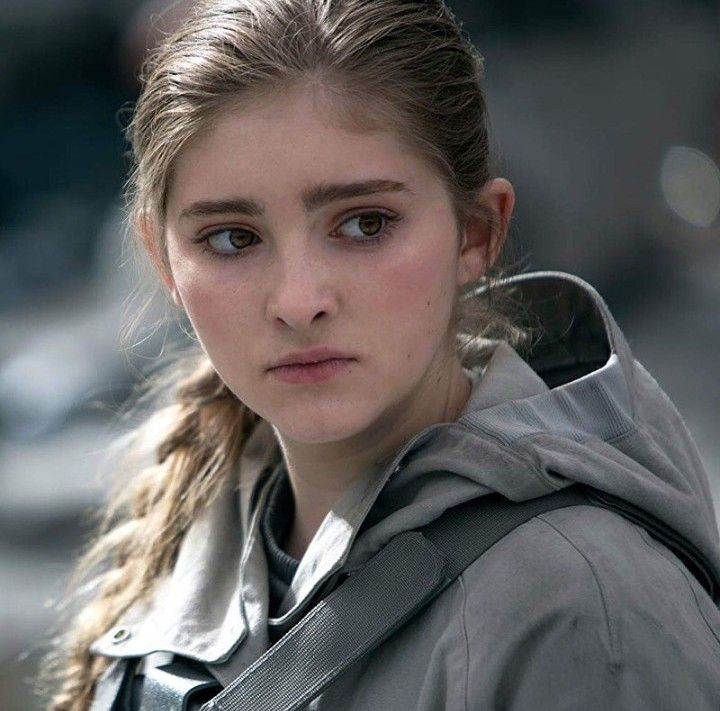

Katniss Everdeen acorda no subsolo do Distrito 13, depois de ser resgatada da arena do 75º Jogos Vorazes. Ela está confusa, traumatizada e devastada ao descobrir que o Distrito 12 foi destruído por bombardeios aéreos. Restaram apenas ruínas, cinzas e cadáveres. Sua mãe e Prim sobreviveram por estarem entre os poucos refugiados levados ao 13 antes do ataque.
Enquanto Katniss tenta entender onde está, é informada que uma resistência organizada está em curso, liderada por Alma Coin, presidente do Distrito 13, com apoio de Plutarch Heavensbee — ex-Idealizador dos Jogos que, em segredo, era parte da rebelião.
Plutarch e Coin pedem que Katniss se torne o Tordo, símbolo da revolução que inspira os distritos a se levantar contra a Capital. Inicialmente, Katniss se recusa. Ela sente que foi usada, que tudo saiu do controle, e está emocionalmente esgotada. Mas ao visitar o hospital do Distrito 8 e testemunhar seu bombardeio, sua raiva se transforma em propósito.
Com esse grito, Katniss grava propos (vídeos de propaganda) incentivando os distritos a se rebelarem. Ela se torna a alma da resistência. Enquanto isso, a Capital usa Peeta Mellark, ainda cativo, em transmissões públicas, pedindo paz. Katniss sente que ele está sendo forçado e manipulado.
O Distrito 13 intensifica sua organização militar e lança ataques estratégicos. A guerra começa a ganhar força. Uma missão é enviada para resgatar Peeta, Johanna e Annie, os tributos capturados. A missão é bem-sucedida — mas quando Peeta retorna, ele não é mais o mesmo.
Programado com “veneno de rastros” (técnica de tortura e reprogramação mental), Peeta acredita que Katniss é uma ameaça mortal. Ele tenta matá-la ao vê-la. O trauma psicológico de Katniss se aprofunda.
O plano da rebelião avança. Os distritos vão sendo libertados um a um. O Distrito 2, último bastião fiel à Capital, é conquistado após um ataque ousado ao “Núcleo”, base armada da Capital escavada na montanha.
Enquanto isso, Peeta tenta se recuperar de sua lavagem cerebral. Ele começa a distinguir memórias falsas das verdadeiras com ajuda do próprio time rebelde. Mas Katniss percebe que a guerra já saiu do controle e que Alma Coin quer mais do que libertar Panem — ela quer tomar o poder.
Para tentar pôr fim ao conflito, Coin envia Katniss a uma missão simbólica de filmagem com o “Esquadrão Estrela” até a Capital. A equipe inclui Gale, Peeta, Finnick, Cressida e outros soldados. Apesar de ser um time de propaganda, todos sabem que é uma missão de morte: a Capital encheu a cidade com armadilhas mortais chamadas “pods”, similares às da arena.
A equipe perde membros um a um. Boggs, o comandante, morre. Finnick morre lutando contra mutantes genéticos no esgoto. A dor emocional se acumula para Katniss, que começa a desconfiar de todos, inclusive de Gale, que ajuda a planejar ataques brutais.
No clímax, civis se aglomeram em frente ao palácio do Presidente Snow, buscando abrigo. Um grupo de crianças é usado como escudo humano. De repente, explosivos detonam no meio da multidão, e uma segunda onda explode logo depois — matando Primrose Everdeen, irmã de Katniss.
O mundo de Katniss desaba.
Enquanto se recupera, Katniss descobre que Snow não foi o responsável pela explosão. Coin ordenou o ataque como um falso atentado da Capital — um ato cruel para virar a opinião pública contra Snow e tomar o poder como libertadora. Katniss é escolhida para executar Snow publicamente. No momento da execução, ela atira uma flecha em Coin, matando-a em frente à multidão. Katniss percebe que Coin não era diferente de Snow — era apenas uma nova tirana se formando. Snow morre logo depois, sufocado por seu próprio sangue ou pisoteado pela multidão, dependendo da interpretação.
Com Coin morta, Paylor, ex-comandante rebelde do Distrito 8, é eleita nova presidente de Panem, com promessas de reconstrução e paz. Katniss é absolvida de seus crimes e enviada de volta ao Distrito 12, onde vive isolada, cercada por lembranças de destruição e saudade. Aos poucos, Peeta se reaproxima. Ambos, marcados pela dor, curam-se lentamente juntos. No epílogo, anos depois, Katniss e Peeta têm dois filhos e vivem em uma nova era. Apesar da paz, Katniss ainda é assombrada pelos fantasmas do passado. Mas ela encontra consolo em ensinar seus filhos a reconhecer os perigos do poder absoluto e da guerra.
Protagonista. O Tordo, símbolo da rebelião. No início da Parte 1, está abalada emocionalmente após os Jogos e a destruição do Distrito 12. Aos poucos, assume seu papel como líder simbólica da revolução. Na Parte 2, descobre que a luta não é só contra Snow, mas também contra a ambição de Coin. Após a morte de Prim, entra em colapso e mata Coin, rompendo com todos os lados do poder. No final, volta ao Distrito 12 e tenta reconstruir sua vida com Peeta. Sua jornada é marcada por dor, perda, amadurecimento e desilusão com o poder.
Preso pela Capital no final de “Em Chamas”. Torturado e “reprogramado” com veneno de rastros, volta como uma ameaça para Katniss. Passa por um longo processo de recuperação, tentando distinguir memórias reais das falsas Luta com culpa e fragilidade, mas mostra grande força ao escolher lutar ao lado de Katniss. Representa a esperança, bondade e a escolha pelo amor num mundo violento. Termina a saga ao lado de Katniss, formando uma família com ela.
Mentor de Katniss e Peeta. Mais sóbrio e sério nas Partes 1 e 2, envolvido com os planos da rebelião. Apoia Katniss, mas entende que Coin pode ser tão perigosa quanto Snow. Sobrevive à guerra, e permanece uma figura protetora, ainda que amarga.
Sobrevive ao ataque da Capital e se refugia no 13. Ao longo da saga, mostra empatia genuína por Katniss e Peeta. Aparece menos, mas evolui como personagem: de fútil a alguém que compreende a dor dos distritos. É vista no final, ajudando na reconstrução do novo governo.
Ex-vencedor dos Jogos. Carismático e habilidoso. Casa-se com Annie e continua lutando por liberdade. Morre heroicamente em missão na Capital, atacado por mutantes nos esgotos. Um dos personagens mais trágicos da saga — sua morte impacta profundamente Katniss e os fãs.
Do Distrito 7. Sarcástica, agressiva, rebelde e imprevisível. Odeia a Capital com paixão e não esconde seu desprezo. Finge ser instável para sobreviver, mas é extremamente inteligente. Ajuda Katniss em momentos-chave.
Do Distrito 3. Calmo, reservado e brilhante com eletrônicos. Planeja a sabotagem da arena com fios e energia elétrica. É uma peça estratégica fundamental no plano da resistência.
Presidente do Distrito 13 e líder da rebelião. Inteligente, autoritária e pragmática. Apresenta-se como salvadora, mas mostra tendências tão opressoras quanto Snow. Decide criar novos Jogos Vorazes usando filhos da Capital, revelando seu lado cruel. Morta por Katniss durante a cerimônia de execução de Snow. Representa o perigo do poder absoluto, mesmo em nome da liberdade.
 

Irmã de Katniss. Simboliza inocência, esperança e a razão inicial da luta de Katniss. Cresce muito ao longo da saga, treinando como médica no 13. Morre tragicamente num ataque com explosivos disfarçados de ajuda humanitária, na frente da mansão de Snow. Sua morte é o ponto de ruptura para Katniss, que percebe que Coin cruzou limites inaceitáveis.
Melhor amigo (e quase par romântico) de Katniss. Guerreiro, idealista e cada vez mais impiedoso. Participa dos planos militares que levam à explosão que mata Prim (embora não se saiba se foi diretamente o responsável). Depois da guerra, se afasta de Katniss. Representa a dureza da guerra e o quanto a linha entre bem e mal pode se apagar.
O ditador de Panem. Frio, calculista e manipulador.Usa o medo e a propaganda para manter o controle sobre os distritos. Ao ser capturado, revela a Katniss que não foi ele quem matou Prim — e sim Coin. Morre após a execução de Coin, em meio à multidão revoltada. Seu fim marca o colapso definitivo do regime opressor da Capital.